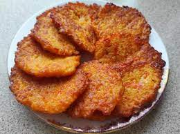

Placki ziemniaczane to od wielu lat
popularne danie wśród ludzi początki
tego dania wahają się na 1700.r
w obrzasze dzisiejszej Belgi i Holandii
jest na pewno smacznym i dobrym posiłkiem
na zrobienie super popołudniowego dania.
1/2 kg ziemniaków
1/2 łyżki mąki pszennej
1/4 cebuli
1 jajko
sól
olej roślinny do smażenia
Krok 1
Ziemniaki obieramy płuczemy. cebulę obieramy.
Ziemniaki i cebulę trzemy na tarce do ziemniaków (najmniejsze oczka)
Krok 2
Dodajemy jajko i mąkę pszenną - 3 duże łyżki.
Doprawiamy do smaku solą i pieprzem. Mieszamy do uzyskania jednolitej konsystencji.
Krok 4
Na patelni rozgrzewamy tłuszcz i nakładamy ok 2 łyżki masy na jednego placka
Krok 5
Smażymy na złoto, 2-3 minuty z każdej strony.
Krok 6
Podajemy z ulubionym dodatkiem bądź same.